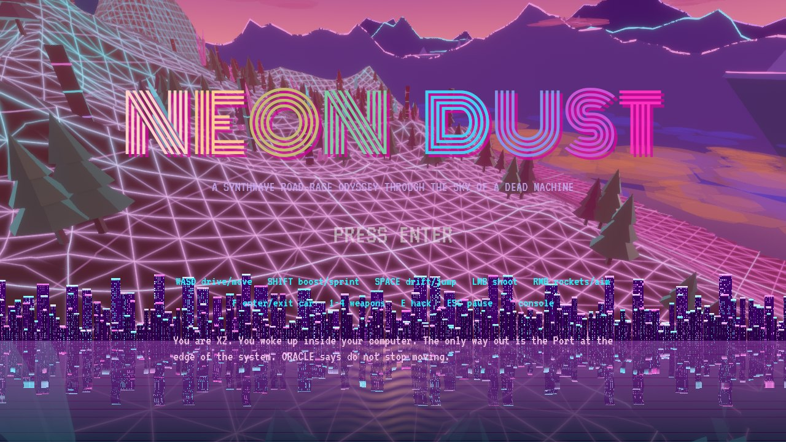
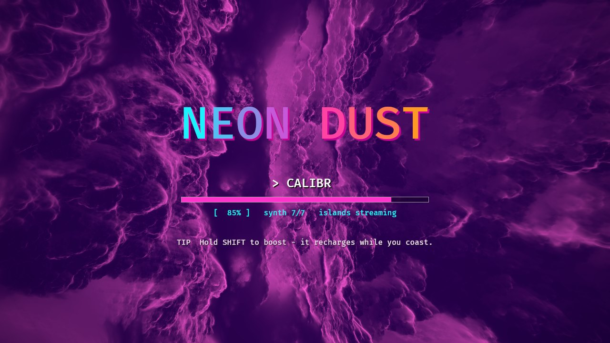
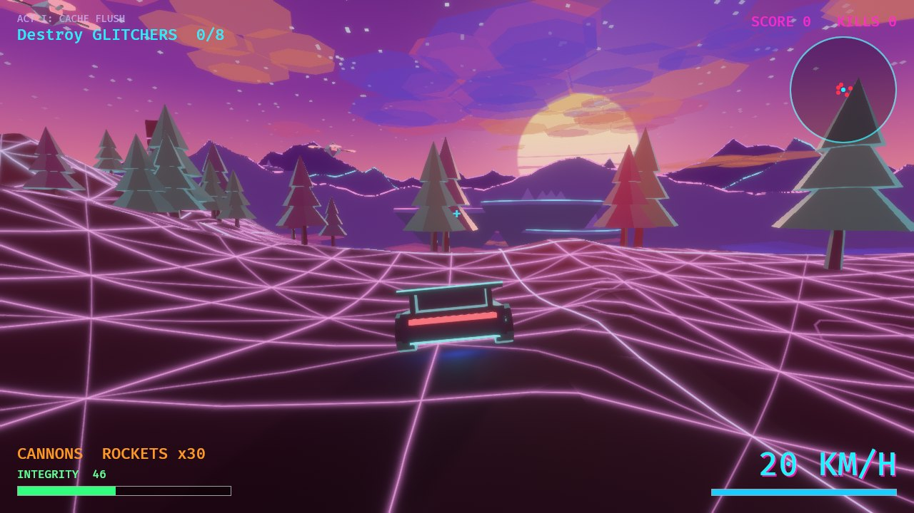
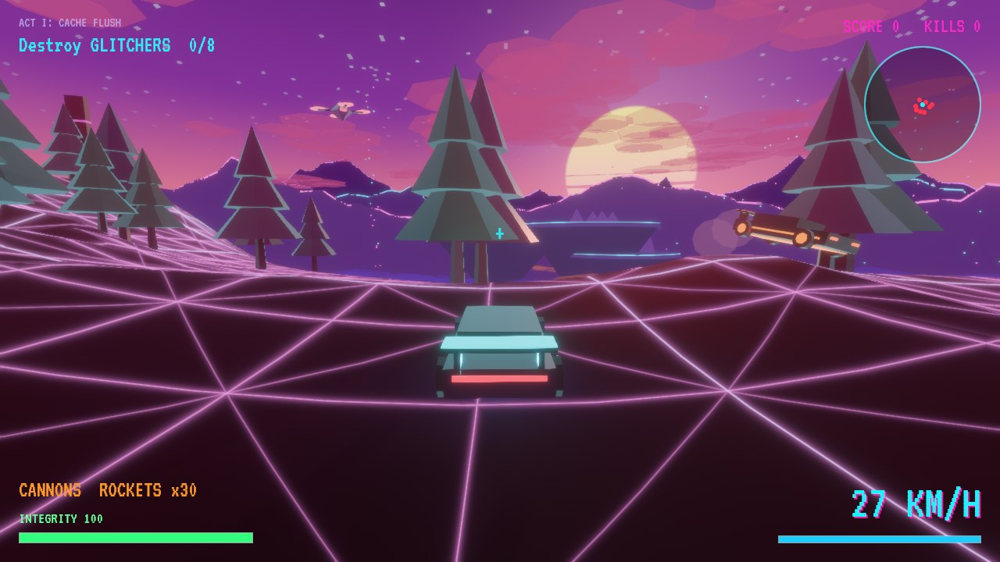
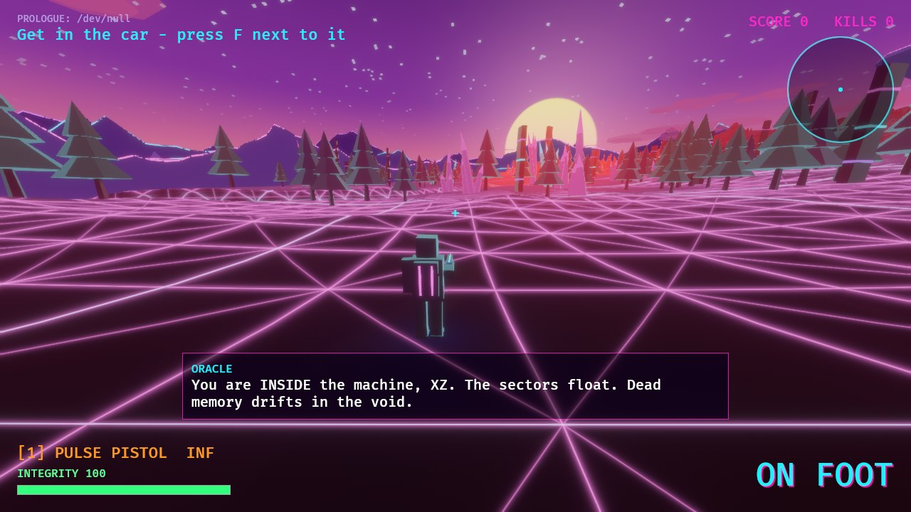
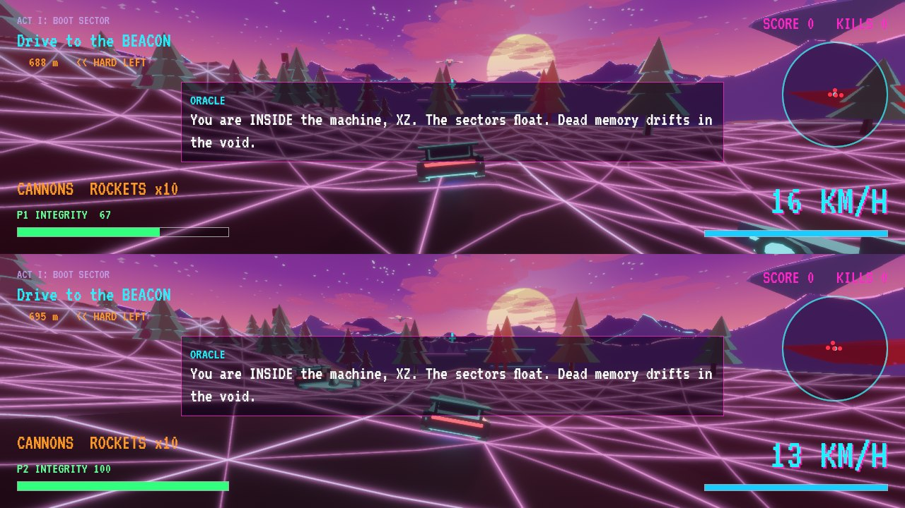
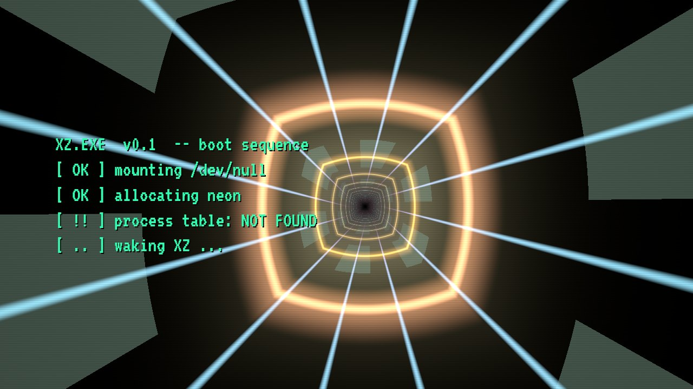
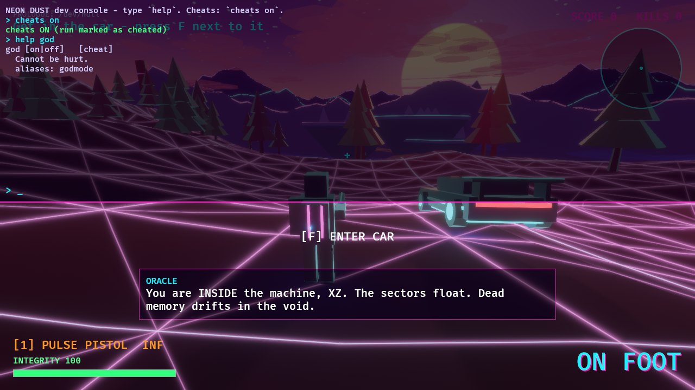

Story
XZ wakes in /dev/null, a dead sector of a machine that should not be running. ORACLE, the OS kernel, speaks in half-sentences: the sectors float, memory drifts, and a Port at the edge of the system is the only way out. Corrupted daemons - Glitchers - hunt anything that is not in the process table. Cross the sectors by car, break the Firewall on foot, outrun the pursuit daemons, and face the Warden at the Port. Then choose: pull the plug and escape - or stay and become the new kernel.
Acts: Prologue (/dev/null) → Boot Sector → Cache Flush → The Firewall (sentries + hack) → Pursuit → The Port (boss) → two endings → free roam.
Screenshots
Captured from the real game (software-rendered with Mesa lavapipe, so frame rate is not representative).
















Quick start
git clone https://github.com/n8n5gy4cs9-cmd/neon-dust cd neon-dust # Linux needs: libasound2-dev libudev-dev libwayland-dev libxkbcommon-dev cargo run --release
First launch shows the loading splash while the whole soundtrack and SFX are synthesised in code (a few seconds in release), then press Enter.
Controls
| Action | Car | On foot |
|---|---|---|
| Move / drive | WASD (throttle, steer, brake/reverse) | WASD relative to camera |
| Boost / sprint | Shift (boost fuel recharges) | Shift |
| Handbrake drift / jump | Space | Space |
| Fire | LMB twin cannons | LMB current weapon |
| Secondary | RMB rockets | RMB aim (zoom, slower) |
| Camera | Mouse (chase cam auto-recentres after 1 s) | |
| Enter / exit car | F (within 6 m of the car) | |
| Weapons | 1-4 or mouse wheel | |
| Hack terminal | hold E next to it (on foot) | |
| Pause | Esc | |
| Console | ` (backtick) | |
Split-screen co-op (2 players)
Player 1 uses keyboard + mouse only. Player 2 uses a gamepad only - press Start on the pad during play to join, or type split 2 in the console (split 1 leaves, splitmode tb|lr switches top/bottom vs left/right). Each player has their own car, camera viewport, HUD, radar, weapons and ammo; enemies target the nearest player, objectives and score are shared. A downed player reboots next to their partner after 5 s; both down = Kernel Panic.
| Action | Gamepad (P2) in car | Gamepad (P2) on foot |
|---|---|---|
| Move / steer | Left stick steers | Left stick moves, right stick looks |
| Throttle / brake | RT / LT | - |
| Handbrake drift / jump | A | A (jump) |
| Boost / sprint | B | Left stick click |
| Fire | X cannons, RB rockets | RT fire, LT aim |
| Enter / exit car | Y | |
| Weapon | D-pad left/right | D-pad or LB / RB |
| Hack terminal | hold X near the terminal | |
Player guide
Driving
The car is a real force-based model: engine power, brakes, drag, rolling resistance and slip-angle tyres with sliding friction. Turn in hard and tap Space to break the rear tyres loose and slide. Slopes pull and push the car; crests launch it. Water slows you, void edges end you (you respawn at your last safe spot, minus a bit of integrity).
Boost
Hold Shift for roughly double power and a wider FOV. The bar drains in ~3 s and refills while you are not boosting. Blue pickups refill it instantly.
Shooting
Bullets are real tracers with travel time. Enemy drones lead their shots - keep moving. Rockets splash everything near the impact, including you. Rail shotgun is a point-blank monster; the pulse pistol never runs dry.
Bailing out
Press F at any speed to jump out with a fraction of the car's velocity. The Firewall gate only opens for someone on foot: sprint, jump and use cover while sentries burn down.
Score & pickups
Drones 100, sentries 250, pursuit cars 300, the Warden 5000. Green = integrity, yellow = ammo, cyan = boost, magenta crate = new weapon.
Mission walkthrough
- Get in the car (F).
- Drive to the cyan beacon.
- Destroy 8 Glitchers - unlocks the Rail Shotgun.
- Drive to the magenta Firewall beacon, leave the car, destroy 4 sentries, hold E at the terminal - unlocks the Rocket Launcher.
- Outrun three pursuit cars to the orange beacon.
- Reach the violet Port, destroy the Warden.
- Choose 1 (escape) or 2 (become the kernel). Then free roam.
Manual
HUD
| Top-left | Chapter, current objective and bearing/distance to the beacon. |
| Top-right | Score, kills, radar (red dots = enemies, range 220 m, rotates with the camera). |
| Bottom-left | Weapon + ammo, integrity bar. |
| Bottom-right | Speed (km/h) and boost bar; hack progress during the Firewall. |
| Centre | Crosshair, context hints ([F] enter car, [HOLD E] hack), ORACLE dialogue box. |
Weapons
| # | Weapon | Notes |
|---|---|---|
| 1 | Pulse Pistol | 5 shots/s, 18 dmg, infinite ammo, cyan tracers |
| 2 | Plasma SMG | 15 shots/s, 8 dmg, spread, magenta tracers |
| 3 | Rail Shotgun | 9 pellets x 11 dmg, 0.85 s cycle (unlocked after Cache Flush) |
| 4 | Rocket Launcher | 90 dmg + 9 m splash (unlocked after the Firewall) |
| car | Cannons / rockets | LMB twin cannons (infinite), RMB rockets from your rocket ammo |
Enemies
| Glitcher | Flying drone, orbits and fires 3-round bursts with lead. 30 hp. |
| Sentry | Rotating turret guarding the Firewall. 110 hp. |
| Pursuit car | Uses the same car physics, boosts when far, rams. 130 hp. |
| The Warden | Boss at the Port: 5-way fan volleys, rockets, support drones. 1500 hp. |
The world
Terrain is generated from noise: huge floating islands with ridged mountain ranges, valleys, rivers that spill off the rim as waterfalls, bioluminescent forests, crystal clusters and neon monoliths. Narrow causeways bridge some islands. Chunks stream in around you; distant ridge silhouettes, far floating islands and clouds above and below provide scale. Change the world with regen <seed>.
Developer console & cheats
Press `. Tab completes, ↑/↓ history. Cheat commands require cheats on first (the run is then marked as cheated). You can also run lines at startup: neon-dust --cmd "cheats on" --cmd "give all".
General
help [command] | List commands or explain one. (aliases: ?, h) |
commands | Print every command name. (aliases: cmds) |
clear | Clear the console log. (aliases: cls) |
echo <text> | Print text. (aliases: say) |
history | Show previous commands (Up/Down also cycle). |
version | Show game version. (aliases: ver) |
quit | Quit the game. (aliases: exit) |
cheats [on|off] | Enable cheat commands (marks the run as cheated). |
pos | Print your position. (aliases: where) |
status | HP, kills, score, mission, enemies. (aliases: stat) |
missions | List mission step names. |
seed [n] | Show world seed; with n (cheat) regenerate the world. |
Video
fps [on|off] | Show the FPS counter. |
fov <40-120> | Field of view. |
bloom <0-1.5> | Bloom intensity. |
fog <200-4000> | Fog visibility distance (m). |
viewdist <2-10> | Terrain view radius in chunks (128 m each). (aliases: vd) |
screenshot | Save screenshot_N.png. (aliases: shot) |
Game
sens <0.0005-0.01> | Mouse sensitivity. |
Audio
track <0-3|auto> | Force music: 0 menu 1 drive 2 combat 3 port. |
Cheats
god [on|off] cheat | Cannot be hurt. (aliases: godmode) |
noclip [on|off] cheat | Fly through everything (on foot): SPACE up, CTRL down. (aliases: fly, ghost) |
infammo [on|off] cheat | Infinite ammo. (aliases: ammo) |
onehit [on|off] cheat | Every hit kills. (aliases: ohk) |
peaceful [on|off] cheat | Enemies stop shooting & spawning. (aliases: calm) |
infboost [on|off] cheat | Unlimited boost. (aliases: nitro) |
lowgrav [on|off] cheat | Low gravity. (aliases: moon) |
speed <0.2-5> cheat | Movement/engine power multiplier. |
heal cheat | Full integrity + boost. |
kill cheat | Kernel panic yourself. (aliases: suicide) |
killall cheat | Destroy every enemy. |
give <all|ammo|boost|1-4> cheat | Give weapons / ammo / boost. |
tp <x> <z> cheat | Teleport to world coordinates. (aliases: teleport) |
goto <start|target|car> cheat | Teleport to start / mission beacon / your car. |
car cheat | Bring the car to you. |
drive cheat | Jump into the car. |
flip cheat | Put the car back on its wheels. |
spawn <drone|sentry|car|boss> [n] cheat | Spawn enemies in front of you. |
wave cheat | Spawn a mixed enemy wave. |
explode cheat | Explosion at the crosshair. (aliases: boom) |
score <n> cheat | Add score. |
mission <name> cheat | Jump to a mission step (see `missions`). |
next cheat | Skip to the next mission step. (aliases: skip) |
regen [seed] cheat | Rebuild the world (optional new seed). |
Tech notes
- Everything is generated in code: meshes, vertex-colour materials, WGSL shaders (terrain, water, waterfall, sky, loading splash), every sound effect and the full synthwave soundtrack. No external asset files.
- Driving ports the DustRacing2D physics idea (force based, slip/sliding friction, quadratic drag + rolling resistance) from x/y to the x/z plane, adding gravity, heightfield following, jumps and terrain-aligned pitch/roll.
- Camera / shooting / enter-exit follow the OpenRW third-person feel.
- Console follows nordrep's registry design: a pure parser returns Actions that the game applies.
- Music: PolyBLEP oscillators, filters, drums, reverb and ping-pong delay render stems offline at startup; the mixer crossfades calm / combat / finale stems. Set
ND_DUMP_AUDIO=dirto export the WAVs. - Screenshots:
./run_shot.sh out.png 20 --play --cmd "cheats on"(xvfb + Mesa lavapipe).
Credits
Visual inspiration: stduhpf's another synthwave sunset thing (Shadertoy), Gruberk's Active Matter loading splash (loading kaleidoscope structure, used under its free-to-use licence; PI tuned to 3.6), and other Shadertoy synthwave pieces. Gameplay references: DustRacing2D, OpenRW, nordrep. Fonts (SIL OFL): VT323, Share Tech Mono, Monoton, Bungee Shade (Google Fonts). Built with Rust and Bevy.